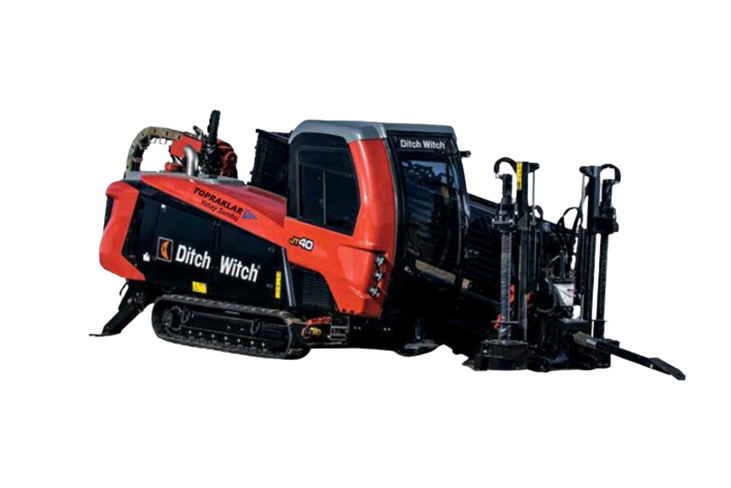

Teknik föyü aç
Ditch Witch
Ditch Witch JT40-20
Orta sınıfın en güçlü makinelerinden biri. Kompakt gövdesi dar şehir içi sahalara girmesini, yüksek çekme kuvveti ise orta ve uzun mesafeli geçişleri tek seferde tamamlamasını sağlar. Yol, cadde, dere ve demiryolu altı geçişlerinde ana makinemizdir.
- 45.000 lb · 200 kNitme / çekme gücü
- 5.500 ft·lb · 7.460 Nmmaksimum tork
- 165 hpCummins Diesel QSB4.5
- 9.300 kgağırlık · 7,37 m uzunluk